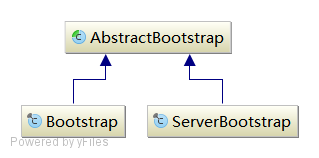

io.netty.boostrap包

AbstractBootstrap
AbstractBootstrap一个用来简化Channel创建的辅助类，定义和提供了一系列链式方法。
AbstractBootstrap的重要源码：
public abstract class AbstractBootstrap<B extends AbstractBootstrap<B, C>, C extends Channel> implements Cloneable {
private volatile EventLoopGroup group;
private volatile ChannelFactory<? extends C> channelFactory;
private volatile SocketAddress localAddress;
private final Map<ChannelOption<?>, Object> options = new LinkedHashMap<ChannelOption<?>, Object>();
private final Map<AttributeKey<?>, Object> attrs = new LinkedHashMap<AttributeKey<?>, Object>();
private volatile ChannelHandler handler;
//在Bootstrap和SeverBootstrap的connect和bind都调用了该方法
final ChannelFuture initAndRegister() {
final Channel channel = channelFactory().newChannel();
try {
init(channel);
} catch (Throwable t) {
channel.unsafe().closeForcibly();
return channel.newFailedFuture(t);
}
ChannelFuture regFuture = group().register(channel);
if (regFuture.cause() != null) {
if (channel.isRegistered()) {
channel.close();
} else {
channel.unsafe().closeForcibly();
}
}
return regFuture;
}
//Bootstrap和ServerBootstrap实现各自的
abstract void init(Channel channel) throws Exception;
//全都用的这个ChannelFactory实现类
private static final class BootstrapChannelFactory<T extends Channel> implements ChannelFactory<T> {
private final Class<? extends T> clazz;
//这就是为什么需要调用channel(class ChannelClass)的原因
BootstrapChannelFactory(Class<? extends T> clazz) {
this.clazz = clazz;
}
//可以看到Channel对象的创建使用的反射
@Override
public T newChannel() {
try {
return clazz.newInstance();
} catch (Throwable t) {
throw new ChannelException("Unable to create Channel from class " + clazz, t);
}
}
}
}
ServerBootstrap
ServerBootstrap的使用示例：
public class EchoServer {
private final int port;
public EchoServer(int port) {
this.port = port;
}
public void run() throws Exception {
// Configure the server.
EventLoopGroup bossGroup = new NioEventLoopGroup(1);
EventLoopGroup workerGroup = new NioEventLoopGroup();
try {
ServerBootstrap b = new ServerBootstrap();
b.group(bossGroup, workerGroup)
.channel(NioServerSocketChannel.class)//设置Channel的实现类
.option(ChannelOption.SO_BACKLOG, 100)
.handler(new LoggingHandler(LogLevel.INFO))
.childHandler(new ChannelInitializer<SocketChannel>() {
@Override
public void initChannel(SocketChannel ch) throws Exception {
ch.pipeline().addLast(
//new LoggingHandler(LogLevel.INFO),
new EchoServerHandler());
}
});
// Start the server.
ChannelFuture f = b.bind(port).sync();
// Wait until the server socket is closed.
f.channel().closeFuture().sync();
} finally {
// Shut down all event loops to terminate all threads.
bossGroup.shutdownGracefully();
workerGroup.shutdownGracefully();
}
}
}
上面例子当我们调用ServerBootstrap的bind时，在内部这个操作被分成了两步：
- 调用initAndRegister()方法得到Channel
- 用上一步得到Channel，执行它的bind方法
Java原生API的例子：
我们知道Netty是在Java的NIO基础上做的封装，所以最终执行的还是Java的API，接下来我们分析一下Netty的源码，看它是怎样封装的Java原生API。
channel创建
调用initAndRegister()方法内部也可以分成三部分：
- 创建Channel对象
- 初始化Channel对象的属性
- 将Channel对象注册到EventLoopGroup
initAndRegister方法源码：
public abstract class AbstractBootstrap<B extends AbstractBootstrap<B, C>, C extends Channel> implements Cloneable {
final ChannelFuture initAndRegister() {
//1) 创建Channel
final Channel channel = channelFactory().newChannel();
try {
//2) 初始化Channel
init(channel);
} catch (Throwable t) {
channel.unsafe().closeForcibly();
return channel.newFailedFuture(t);
}
// 将Channel注册到EventLoopGroup
ChannelFuture regFuture = group().register(channel);
if (regFuture.cause() != null) {
if (channel.isRegistered()) {
channel.close();
} else {
channel.unsafe().closeForcibly();
}
}
return regFuture;
}
}
三步操作的详细说明：
// 由于我们使用的NioServerSocketChannel，所有在newInstance()时会执行到它的无参构造函数
public class NioServerSocketChannel extends AbstractNioMessageChannel
implements io.netty.channel.socket.ServerSocketChannel {
private static final SelectorProvider DEFAULT_SELECTOR_PROVIDER = SelectorProvider.provider();
private static ServerSocketChannel newSocket(SelectorProvider provider) {
try {
// 这里对应原生API例子里的ServerSocketChannel.open()，Netty不这样写是因为一个Bug的原因，这里就不细说了
return provider.openServerSocketChannel();
} catch (IOException e) {
throw new ChannelException("Failed to open a server socket.", e);
}
}
public NioServerSocketChannel() {
this(newSocket(DEFAULT_SELECTOR_PROVIDER));
}
public NioServerSocketChannel(ServerSocketChannel channel) {
super(null, channel, SelectionKey.OP_ACCEPT);
config = new NioServerSocketChannelConfig(this, javaChannel().socket());
}
}
// init()操作没什么可说的
// register()
// 因为我们使用的是NioEventLoopGroup，而它是由n个NioEventLoop组成的（这个下一篇会详细说），
// group.register()实际调用的是MultithreadEventLoopGroup的register()方法
public abstract class MultithreadEventLoopGroup extends MultithreadEventExecutorGroup implements EventLoopGroup {
//这里可以看到next出来的是EventLoop，在我们这里也就是NioEventLoop
@Override
public EventLoop next() {
return (EventLoop) super.next();
}
@Override
public ChannelFuture register(Channel channel) {
return next().register(channel);
}
}
// 所以调用的是NioEventLoop的register()方法，而它并没有实现该方法，而是继承自SingleThreadEventLoop
public abstract class SingleThreadEventLoop extends SingleThreadEventExecutor implements EventLoop {
@Override
public ChannelFuture register(final Channel channel, final ChannelPromise promise) {
......
channel.unsafe().register(this, promise);
return promise;
}
}
// 上面执行的实际上是AbstractChannel的内部类AbstractUnsafe的register0()方法（从NioServerSocketChannel一步步向上找到的）
public abstract class AbstractChannel extends DefaultAttributeMap implements Channel {
protected abstract class AbstractUnsafe implements Unsafe {
private void register0(ChannelPromise promise) {
try {
// check if the channel is still open as it could be closed in the mean time when the register
// call was outside of the eventLoop
if (!promise.setUncancellable() || !ensureOpen(promise)) {
return;
}
doRegister();
registered = true;
safeSetSuccess(promise);
pipeline.fireChannelRegistered();
if (isActive()) {
pipeline.fireChannelActive();
}
} catch (Throwable t) {
// Close the channel directly to avoid FD leak.
closeForcibly();
closeFuture.setClosed();
safeSetFailure(promise, t);
}
}
}
}
// 上面的register0方法，会调用外部类的doRegister()方法，还是顺着NioServerSocketChannel的继承路径一路向上找
// 它最后调用的是AbstractNioChannel的doRegister()
public abstract class AbstractNioChannel extends AbstractChannel {
@Override
protected void doRegister() throws Exception {
boolean selected = false;
for (;;) {
try {
// 这里对应原生API例子的server.register(select,SelectionKey.OP_ACCEPT)
// 而Selector的生成时在NioEventLoop初始化的时候Open的，这里先不提
selectionKey = javaChannel().register(eventLoop().selector, 0, this);
return;
} catch (CancelledKeyException e) {
if (!selected) {
eventLoop().selectNow();
selected = true;
} else {
throw e;
}
}
}
}
}
//后面的 pipeline.fireChannelRegistered()都没有进行实质操作，我们看一下pipeline.fireChannelActive()经过了哪些步骤
final class DefaultChannelPipeline implements ChannelPipeline {
@Override
public ChannelPipeline fireChannelActive() {
head.fireChannelActive();
if (channel.config().isAutoRead()) {
channel.read();
}
return this;
}
}
public abstract class AbstractChannel extends DefaultAttributeMap implements Channel {
@Override
public Channel read() {
pipeline.read();
return this;
}
}
它会调到 （一目了然，懒得再写注释了）
final class DefaultChannelPipeline implements ChannelPipeline {
static final class HeadHandler implements ChannelOutboundHandler {
@Override
public void read(ChannelHandlerContext ctx) {
unsafe.beginRead();
}
}
}
public abstract class AbstractNioChannel extends AbstractChannel {
protected abstract class AbstractNioUnsafe extends AbstractUnsafe implements NioUnsafe {
@Override
public void beginRead() {
// Channel.read() or ChannelHandlerContext.read() was called
readPending = true;
super.beginRead();
}
}
}
public abstract class AbstractChannel extends DefaultAttributeMap implements Channel {
protected abstract class AbstractUnsafe implements Unsafe {
@Override
public void beginRead() {
if (!isActive()) {
return;
}
try {
doBeginRead();
} catch (final Exception e) {
invokeLater(new OneTimeTask() {
@Override
public void run() {
pipeline.fireExceptionCaught(e);
}
});
close(voidPromise());
}
}
}
}
public abstract class AbstractNioChannel extends AbstractChannel {
@Override
protected void doBeginRead() throws Exception {
if (inputShutdown) {
return;
}
final SelectionKey selectionKey = this.selectionKey;
if (!selectionKey.isValid()) {
return;
}
final int interestOps = selectionKey.interestOps();
if ((interestOps & readInterestOp) == 0) {
selectionKey.interestOps(interestOps | readInterestOp);
}
}
}
/**
* 至此，register操作结束。
*/
bind过程
// ServerBootstrap的bind方法是继承自AbstaractBootstrap
public abstract class AbstractBootstrap<B extends AbstractBootstrap<B, C>, C extends Channel> implements Cloneable {
//而它最终执行的是doBind0，而这个方法其实是执行的Channel的bind方法
private static void doBind0(final ChannelFuture regFuture, final Channel channel,
final SocketAddress localAddress, final ChannelPromise promise) {
channel.eventLoop().execute(new Runnable() {
@Override
public void run() {
if (regFuture.isSuccess()) {
channel.bind(localAddress, promise).addListener(ChannelFutureListener.CLOSE_ON_FAILURE);
} else {
promise.setFailure(regFuture.cause());
}
}
});
}
}
// 由于我们使用的NioServerSocketChannel，而它的Bind方法继承自AbstractChannel
public abstract class AbstractChannel extends DefaultAttributeMap implements Channel {
@Override
public ChannelFuture bind(SocketAddress localAddress) {
return pipeline.bind(localAddress);
}
}
// AbstaractChannel的pipeline在对象构造时使用的是DefaultChannelPipeline，所以
final class DefaultChannelPipeline implements ChannelPipeline {
@Override
public ChannelFuture bind(SocketAddress localAddress, ChannelPromise promise) {
return tail.bind(localAddress, promise);
}
}
// 从pipeline的tail开始，会最终执行到head，所以
static final class HeadHandler implements ChannelOutboundHandler {
protected final Unsafe unsafe;
@Override
public void bind(ChannelHandlerContext ctx, SocketAddress localAddress, ChannelPromise promise)
throws Exception {
unsafe.bind(localAddress, promise);
}
}
// HeadHandler是DefaultChannelPipeline的内部类，而Unsafe来自Channel对象
final class DefaultChannelPipeline implements ChannelPipeline {
public DefaultChannelPipeline(AbstractChannel channel) {
......
HeadHandler headHandler = new HeadHandler(channel.unsafe());
head = new DefaultChannelHandlerContext(this, null, generateName(headHandler), headHandler);
......
}
}
// 由于我们使用的NioServerSocketChannel，而它的Unsafe继承自父类AbstractNioMessageChannel的内部类NioMessageUnsafe，
// 而它的bind方法是继承AbstractChannel的内部类AbstractUnsafe
protected abstract class AbstractUnsafe implements Unsafe {
@Override
public final void bind(final SocketAddress localAddress, final ChannelPromise promise) {
......
doBind(localAddress);
......
}
}
// 上一步Unsafe调用了外部类的doBind方法，而这个方法是Abstaract的抽象方法，我们使用的NioServerSocketChannel实现了该方法，
// 最终落到Java自身的API上
public class NioServerSocketChannel extends AbstractNioMessageChannel
implements io.netty.channel.socket.ServerSocketChannel {
@Override
protected void doBind(SocketAddress localAddress) throws Exception {
// 这里对应着Java原生API例子中的server.socket().bind(new ..... )
javaChannel().socket().bind(localAddress, config.getBacklog());
}
}
总结
至此，我们注册了OP_ACCEPT事件，并绑定好了端口，可以进行监听事件的产生，为后续的读写事件做准备。
上面就是serverBootstrap bind的全过程，你可以会好奇循环等待事件产生的selector.select()部分在哪呢？ 这部分其实是由DefaultChannelHandlerContext触发，由NioEventLoop执行的，这个后面讲到NioEventLoop的时候在细说
Bootstrap
Bootstrap的使用示例：
public class EchoClient {
private final String host;
private final int port;
private final int firstMessageSize;
public EchoClient(String host, int port, int firstMessageSize) {
this.host = host;
this.port = port;
this.firstMessageSize = firstMessageSize;
}
public void run() throws Exception {
// Configure the client.
EventLoopGroup group = new NioEventLoopGroup();
try {
Bootstrap b = new Bootstrap();
b.group(group)
.channel(NioSocketChannel.class)//设置Channel的具体实现类
.option(ChannelOption.TCP_NODELAY, true)
.handler(new ChannelInitializer<SocketChannel>() {//添加需要的ChannelHandler
@Override
public void initChannel(SocketChannel ch) throws Exception {
ch.pipeline().addLast(
//new LoggingHandler(LogLevel.INFO),
new EchoClientHandler(firstMessageSize));
}
});
// Start the client.
ChannelFuture f = b.connect(host, port).sync();
// Wait until the connection is closed.
f.channel().closeFuture().sync();
} finally {
// Shut down the event loop to terminate all threads.
group.shutdownGracefully();
}
}
}
Bootstrap和ServerBootstrap区别就在于init()方法，其他基本类似就细说了。
总结
从上面两步的源码分析，我们可以看出，原本只有几句话的代码，被这样一层层复杂的包装，构成了Netty的现有结构，那如此设计是目的是什么呢？
可以看出Bootstrap的确如API所说，是方便创建、启动Channel的辅助类，它包装了Channel复杂的创建过程，只暴露简单的API出来。
日期：2014-07-16
参考资料：Netty4学习笔记（2）-- Bootstrap、Netty4学习笔记（3）-- ServerBootstrap